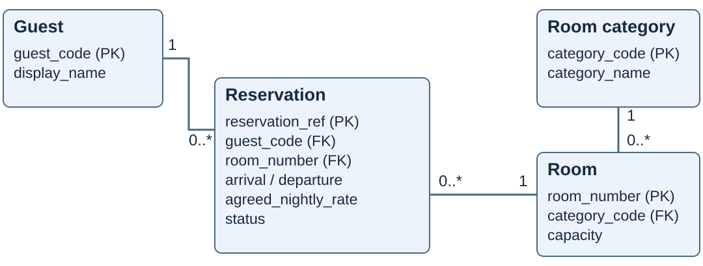

MIT 8103 ADVANCED DATABASE SYSTEMS | SEPTEMBER COHORT 2026
Tolulope Otayomi | Student ID 301920758
Public repository: github.com/Void-Individual/Otayomi_Tolulope_301920758
Palm Court Guesthouse is a fictional single-property business in Lagos with 12 rooms in three categories. Receptionists need to find available rooms, reserve complete stays, and record cancellations or completion. Managers need reports on booked nights, booking value and cancellation history. All records are synthetic; payments, a guest-facing application and external integrations are outside scope.
Each reservation covers one room and one lead guest. Arrival is included and departure excluded, so a 10-12 December stay occupies two nights. Cancelled reservations release availability but remain in history. Prices are agreed NGN booking values, not receipts or profit. Scenario dates are separate from actual execution timestamps.
PostgreSQL stores four business relations: guest, room category, room and reservation. Primary and foreign keys enforce identity and required relationships. A separate administrator-controlled demonstration clock supports repeatable date rules. The normalisation argument progresses from repeating nights to 3NF: guest and category facts are separated, while each booking retains its historical agreed rate. Nights and totals are derived.

A partial GiST exclusion constraint prevents overlapping non-cancelled stays in the same room. Triggers check capacity, permitted status changes and immutable booking terms. The restricted operator uses controlled booking functions. These mechanisms apply PostgreSQL constraints and range types [2].
| P1 evidence | Observed result |
|---|---|
| Constraint tests and clean installation replay | 47 checks passed; original 8 guests, 3 categories, 12 rooms and 10 reservations retained. |
| Lifecycle and pricing checks | Adjacent stays accepted; overlaps rejected; cancellation releases nights; earlier agreed rates survive later category-price changes. |
Evidence entry point: portfolio-1-database-design, P1_README.md and P1_Results.txt (all filenames carry the student prefix).
PALM COURT GUESTHOUSE | IMPLEMENTATION AND MEASURED EVIDENCE
Six SQL queries cover availability, upcoming bookings, period totals, unused rooms, cancellations and guests without non-cancelled bookings. Assertions compare actual ordered results with specified expectations. December totals are 17 booked room-nights and NGN 660,000. A 31 December-3 January stay contributes only its December night to that month.
A separate 200,000-request synthetic workload measures a guest-history query before and after a B-tree index on (guest_code, arrival). It contains 5,000 synthetic guests and an intentionally artificial 90% cancellation rate. Both phases use the same query and data, ANALYZE, two warm-up runs and five measured EXPLAIN ANALYZE runs [3].
| Captured measure | Before index | After index |
|---|---|---|
| Access plan | Sequential scan + sort | Bitmap index/heap scan + sort |
| Median execution time | 14.455 ms | 0.743 ms |
| Shared buffer reads per execution | 1,935 | 19 |
| Ordered result rows | 16 | 16, unchanged |
The execution-only ratio is 19.45x; the added index occupies 6.04 MiB. Index maintenance adds write cost, but that cost was not measured. The server had only 400 kB of shared buffers; JIT and parallel query were disabled equally. Buffer reads may come from the OS cache. These local measurements are not a production-performance guarantee.
A committed booking persists. A separate transaction inserts a guest and valid booking, then encounters a capacity error; rollback removes all its attempted changes. A duplicate booking reference is rejected. Two independent READ COMMITTED sessions then compete for the same room and dates. B cannot see A's uncommitted row, but its conflicting insert waits on the exclusion constraint [4].
Observed wait: B PID 534, wait_event_type=Lock wait_event=transactionid; blocking PID=520 (A) A commits; B receives SQLSTATE 23P01 and rolls back. Final accepted reference: PCG-P3-WINNER; loser absent.
Selected observation from P3_ConcurrencyResults.json; actual run 15 November 2026. Session transcripts preserve the commands and output. Both sessions closed; the separate P3 database ended with 12 reservations.
MongoDB stores one document per event with an embedded booking snapshot: 13 reconstructed events for ten P1 reservations (ten confirmations, two completions and one cancellation). BSON dates and Decimal128 rates have explicit validation. Nested room queries and aggregation distinguish historical events from the latest booking state [5].
Replay inserts zero duplicates; invalid documents are rejected. Reconciliation matches all 11 represented business fields for ten latest snapshots against PostgreSQL. Embedding aids history retrieval but duplicates data. MongoDB does not enforce the SQL overlap rule or synchronise automatically; PostgreSQL remains the booking authority.
PALM COURT GUESTHOUSE | DISTRIBUTION, REFLECTION AND SOURCES
Proposal only: no cloud deployment, replica set, failover or backup restoration was performed. The proposed design keeps one PostgreSQL writer with a synchronous standby across zones, fenced failover and separately controlled backups. It prioritises safe booking acceptance during partitions; losing a required standby can delay commits. A standby does not replace a recoverable backup [6].
A proposed three-member MongoDB replica set would use majority writes for history. A transactional SQL outbox and retryable relay would deliver committed events using stable IDs; history could lag behind bookings. Neither component is implemented. Sharding is unnecessary for 12 rooms; future multi-property growth would require workload and shard-key analysis [7].
I initially found it difficult to interpret the requirements and understand how the five activities should fit together. Separating the deliverables helped clarify the scope while retaining one case study. Distinguishing implemented work from a proposed cloud design was particularly important.
MongoDB configuration was difficult to get right during the first few attempts. The working setup uses a separate local process and project-specific database. The connection check establishes reachability; validation and SQL reconciliation check different aspects of data correctness. A successful connection alone does not establish that the model or results are correct.
Month-specific booking values were also tricky. A 31 December-3 January stay at NGN 40,000 per night totals NGN 120,000, but only NGN 40,000 belongs to December. Counting only nights inside the reporting period, excluding departure and cancelled stays, explains why monthly value differs from full-stay value.
Full scripts, outputs, diagrams, reproducibility instructions and additional technical references are organised in the five portfolio directories. This summary follows the assessment structure [1].
OpenAI Codex assisted with planning, code, documentation and test execution. I reviewed the benchmark interpretation, concurrency explanation and proposed-cloud scope.